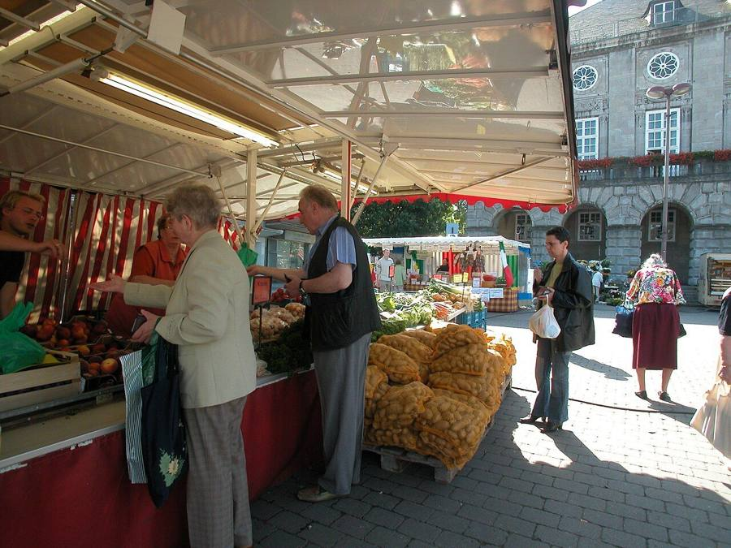

Per començar com a autònom et dones d'alta a Hisenda (model 036) i a la Seguretat Social (RETA) abans de facturar. Des del 2023 la quota depèn dels teus ingressos reals; el primer any pots pagar una tarifa plana de 80 € al mes. Cada trimestre presentes l'IVA (model 303) i el pagament a compte de l'IRPF (model 130), tret que et retinguin a les factures.
Donar-se d'alta pas a pas
- Hisenda: declaració censal amb el model 036, per internet amb certificat digital o Cl@ve. Tries l'activitat (epígraf de l'IAE) i els impostos que presentaràs.
- Seguretat Social: alta al Règim Especial de Treballadors Autònoms (RETA) per Importass, com a màxim el mateix dia que comences. Indiques la previsió d'ingressos per fixar la quota.
- Ajuntament: si obres un local, necessites llicència o comunicació prèvia d'activitat.
- Si contractes treballadors, inscriu-te com a empresa a la Seguretat Social.
Pots fer els tràmits en un Punt d'Atenció a l'Emprenedor (PAE). A Catalunya, la xarxa Catalunya Emprèn ofereix assessorament gratuït.
La quota d'autònoms
Des del 2023 es cotitza segons els rendiments nets (ingressos menys despeses). Hi ha 15 trams: amb rendiments baixos la quota ronda els 200 € al mes i amb els més alts supera els 500 €. Tries un tram segons la teva previsió i el pots canviar fins a 6 vegades l'any. Al final, la Seguretat Social compara amb el que declares a Hisenda i et retorna o et reclama la diferència.
Tarifa plana: si et dones d'alta per primera vegada (o portes 2 anys sense estar d'alta, 3 si ja la vas gaudir), pagues 80 € al mes durant 12 mesos, prorrogables 12 més si els teus ingressos no arriben al salari mínim.
La quota dona dret a baixa per malaltia, naixement, jubilació i cessament d'activitat (l'«atur» dels autònoms).
Impostos i factures
- IVA: cobres l'IVA a les factures (21 %, 10 % o 4 %) i l'ingresses cada trimestre amb el model 303, restant l'IVA de les despeses. Resum anual al gener (model 390).
- IRPF: si els teus clients són empreses o professionals, et retenen el 15 % a la factura (el 7 % l'any de l'alta i els dos següents). Si no, avances el 20 % del benefici cada trimestre amb el model 130.
- Terminis trimestrals: de l'1 al 20 d'abril, juliol i octubre, i de l'1 al 30 de gener.
- Factures: número correlatiu, data, les teves dades i les del client amb NIF, descripció, base, tipus d'IVA, retenció i total. Guarda les factures com a mínim 4 anys.
Autònom o societat?
Com a autònom respons dels deutes amb tot el teu patrimoni. Amb una societat limitada (SL) el risc es limita al capital aportat, i els beneficis tributen a l'impost sobre societats (en general, 25 %; tipus reduïts per a empreses petites i de nova creació) en lloc de l'IRPF, que pot arribar al 47 % o més.
- Des del 2022 la SL es pot crear amb 1 € de capital, tot i que mentre no arribi a 3.000 € hi ha regles de reserva.
- Constituir-la costa notari, registre i gestoria; també comporta comptabilitat i comptes anuals.
- Com a orientació, sol començar a compensar quan el benefici anual supera els 40.000 o 50.000 €.
Si sereu diversos socis, signeu un pacte de socis.
Treballar per a altres i cobrar
Deixa per escrit què fas, el preu i els terminis amb un contracte de prestació de serveis. Si un client no paga, envia un requeriment i, si continua sense pagar, fes servir el procés monitori: es presenta al jutjat amb un formulari, sense advocat, per a qualsevol import. Les empreses han de pagar en un màxim de 60 dies.
Compte amb els «falsos autònoms»: si treballes només per a una empresa, amb el seu horari i els seus mitjans, en realitat ets un treballador per compte d'altri i pots reclamar un contracte.
Informació general, no assessorament. Per a un cas concret, consulta un professional o el servei públic corresponent.
Vigent a 9 de novembre de 2026 · Ley 20/2007 del Estatuto del Trabajo Autónomo, Ley 37/1992 del IVA, Ley 35/2006 del IRPF y Ley 18/2022 de creación y crecimiento de empresas